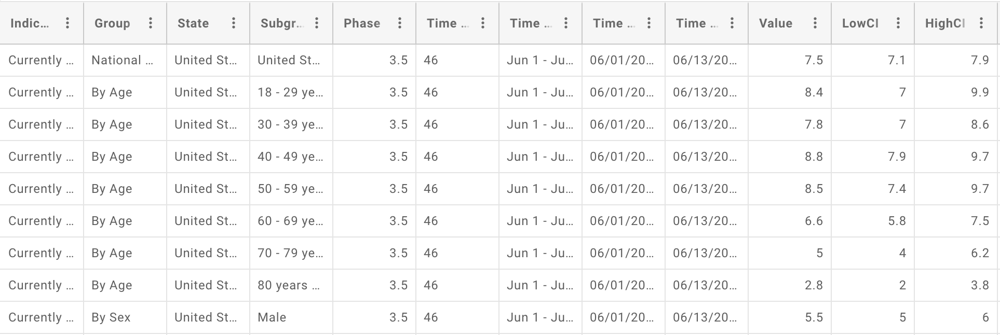
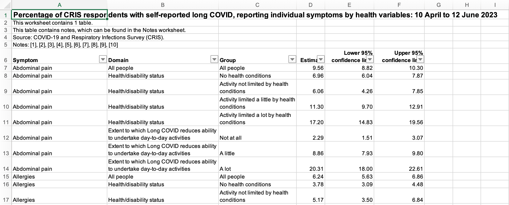
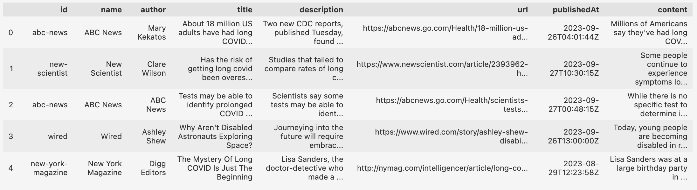

Data Gathering
In order to understand long covid, I will be gathering data from a multitude of sources.
Record data from CDC - Long Covid:
The CDC, in partnership with the Census Bureau, releases the results of a Household Pulse Survey, a survey that began in Phase 3.5 of the COVID-19 pandemic (June of 2022) with questions regarding symptoms that may have lasted 3 months of longer since the patient’s COVID-19 diagnosis. The survey collects the results of those with post covid-19 symptoms across a multitude of demographics including age, sex, gender, and location (state). These survey results were recorded every 2 weeks and released the followed 2 weeks. Using the open SODA API and the integration in R via RSocrata, I was able to obtain this dataset. A sample of the raw dataset is show below.

In the dataset, we notice that the first column is called indicator. This depicts the group of people surveyed and the average results. The following indicator demographics were collected: The percentage of all U.S. adults who EVER experienced post-COVID conditions (long COVID) that lasted three months or longer and had COVID, the percentage of adults who EVER experienced post-COVID conditions (long COVID) among those who ever had COVID, the percentage of all U.S. adults who are CURRENTLY experiencing post-COVID conditions (long COVID) symptoms and had COVID, and the percentage of adults who are CURRENTLY experiencing post-COVID conditions (long COVID) among those who ever had COVID. The next columns we can discuss are group and subgroup, where group describes the demographic category (age, sex, gender, race) and the subgroup is the values within the group (age ranges and specific sex, gender, and race). Other columns include State (the entirety of the U.S is also included), Time (number of weeks), the Value, which is the percentage of the indicator group.
Please Note: In the survey questions, the CDC pre-defined Long Covid sympotoms as the following: “Long term symptoms may include: Tiredness or fatigue, difficulty thinking, concentrating, forgetfulness, or memory problems (sometimes referred to as “brain fog”), difficulty breathing or shortness of breath, joint or muscle pain, fast-beating or pounding heart (also known as heart palpitations), chest pain, dizziness on standing, menstrual changes, changes to taste/smell, or inability to exercise.”

Long Covid Symptoms in UK
In order to understand the symptoms faced by Long Covid patients, we’ll also be looking at data sourced from the UK. The COVID-19 and Respiratory Infections Survey (CRIS) was used to obtain self-reported persisting symptoms of long covid within the UK. This dataset was downloaded from the Office of National Statistics (UK). It is important to note that these statistics are not a reflection of the entire UK populations, but rather the individuals who self-reported Long Covid through the CRIS survey. All data in this survey was collected between April - July of 2023.
The data itself is originally sourced from an excel file containing a multitude of sheets. The data encompasses surveys of those who reported Long Covid symptoms based on age, sex, ethnicity, geography, health, employment, and activity limitations. Please note that each demographic was reported separately, so we would not be able to detect further overlap in demographics.

News API:

The News API is a service that provides a way for accessing and retrieving news articles and related information from various sources on the internet. It is a way to integrate real-time and historical news data into their applications, websites, or services. By using the News API, I decided to extract all news articles that contained the key phrase “long covid”. One disadvantage of the New API, however, is that it can only access news articles from the past month. Thus, for future study, a deeper dive into collecting more articles would be necessary.
The data itself contains the name of the news outlet, the title of the article, the description of the article, its URL, the date and time of the publication, as well as the content of the article. Going forward, I hope to use this text data to analyze the sentiment of Long Covid news over the past month as well as compare the media coverage of Long Covid in conparison to other contagious diseases such as chickenpox and influenza.
Code
from newsapi import NewsApiClient
import pandas as pd
from datetime import date
from dateutil.relativedelta import relativedelta
date = date.today()
date_past = date - relativedelta(months=1)
# Init
newsapi = NewsApiClient(api_key= API_KEY)
sources = newsapi.get_sources()
sources = pd.DataFrame(sources['sources'])
sources = sources[(sources['language'] == 'en')]
df_sources = ', '.join(sources['id'].astype(str))
df_domains = ', '.join(sources['url'].astype(str))
# /v2/everything
p1 = newsapi.get_everything(q='"long covid"',
sources=str(df_sources),
domains=str(df_domains),
from_param= date_past,
to= date,
language= 'en',
sort_by='relevancy')
p2 = newsapi.get_everything(q='chickenpox',
sources=str(df_sources),
domains=str(df_domains),
from_param= date_past,
to= date,
language= 'en',
sort_by='relevancy')
p3 = newsapi.get_everything(q='influenza',
sources=str(df_sources),
domains=str(df_domains),
from_param= date_past,
to= date,
language= 'en',
sort_by='relevancy')
#Concating the data
long_covid_news = pd.DataFrame(p1['articles'])
long_covid_news['topic'] = 1
chickenpox_news = pd.DataFrame(p2['articles'])
chickenpox_news['topic'] = 2
influenza_news = pd.DataFrame(p3['articles'])
influenza_news['topic'] = 3
all_news = pd.concat([long_covid_news, chickenpox_news, influenza_news], axis=0)
all_news[['id', 'name']] = pd.DataFrame(all_news['source'].tolist())
all_news.drop(columns=['source'], inplace=True)
all_news = all_news[['id','name','author','title','description','url','publishedAt','content','topic']]
all_news = all_news[all_news['content'] != '[Removed]']
all_news.to_csv('../../data/00-raw-data/news_raw.csv', index=False)
White House perspective of Long Covid and necessary steps:
To gain insights into the government’s stance on Long Covid and the essential healthcare measures that need implementation, we turn our attention to the official statement from the U.S. White House. This communication likely elucidates the administration’s understanding of the prolonged effects of COVID-19 and outlines the strategic healthcare initiatives deemed necessary to address the challenges posed by Long Covid for the American people.
Through this unlabeled text data, we hope to gain a better understanding of the government’s priorities, proposed interventions, and its commitment to supporting those affected by the lasting impact of the virus, as well as the president’s overall sentiment on this topic. To view the President’s Memorandum.
Harvard Long Covid Survey

In 2022, Harvard researcher, Paul Kuodi published a dataset containing the survey results of indivduals with Long Covid. The dataset is broken down into a vast number of columns containing demographic data for each indivdidual. Some of the variables within the dataset include country, sex, if the patient is Covid positive, number of days with Covid, vaccination status and type of vaccine, and a meried of symptoms ranging from respitory, autoimmune, vommiting, hairloss, and a fever just to name a few. This dataset is unique in that the survey allowed users to self-report symptoms rather than selecting from a pre-determined symptom list as with the other survey data I’ve collected. Please vists Harvard Dataverse to find the original data collected.